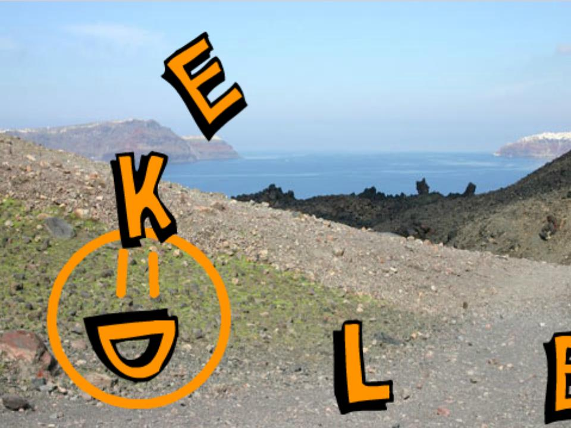
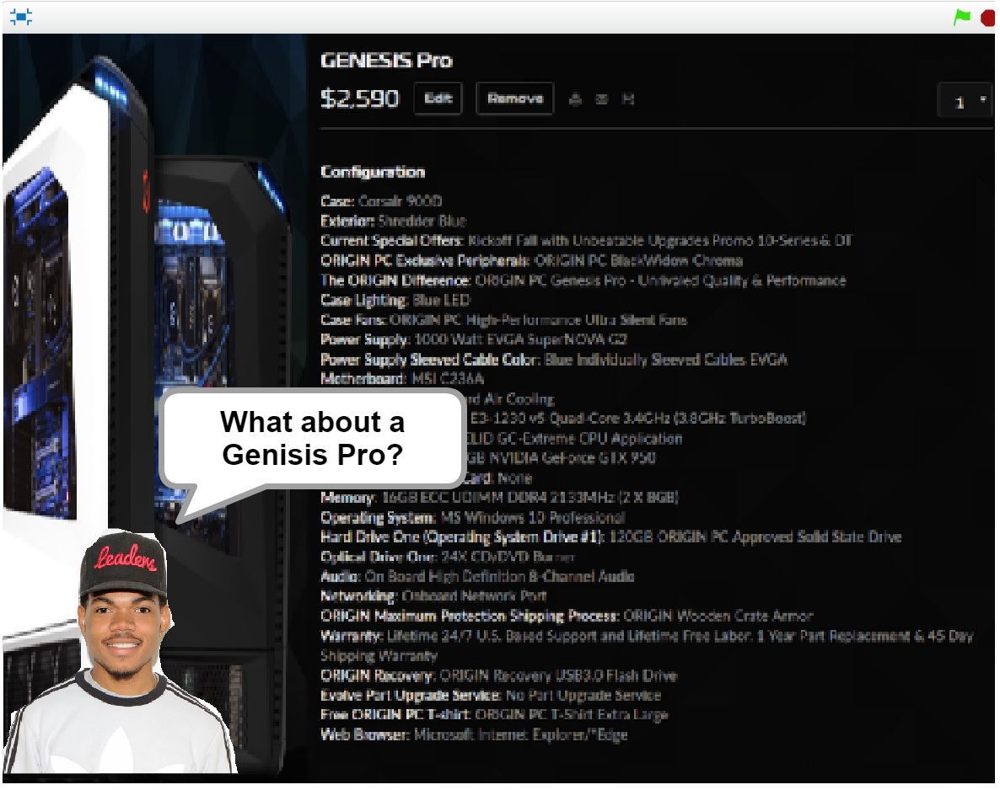
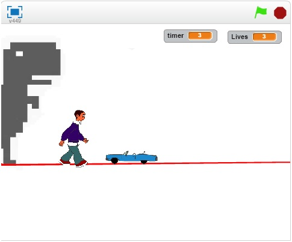

Name Assignment

Description
Use scratch to design and create a program that shows my name. The requirements were to add a sprite for each letter in my name and give them 3 unique behaviors. The program needed to run when the green flag was clicked and for extra credit I added a function to reset the scene to the beginning each time the green flag was clicked.
Concepts Learned:
- Using event blocks - green flag clicked, when key pressed
- Conditional statements - used if statements to……
- Used loops - I used a forever block to……, I used a repeat until block to…….
- Sprites - I created my own sprites using the sprite editor, I used the library of sprites to find letters in my name and adjusted the costumes, .....
- Movement - I used the x and y values to make my sprites move to their original location when the green flag was clicked, I rotated the sprites to …….
Computer Buying Project

Description
Use scratch to design and create a presentation that compares models of computers based on an interview with a real person. There was a rubric with all the specific requirements. We needed to have at least 4 computers in our presentation.
Concepts Learned:
- Changing backgrounds during the program and using that as slides.
- Broadcasting and receiving from a sprite to another (using that for timing)
- Edit sprites so they fit my needs.
- Make sprites think and say words for a certain amount of time.
- Combine two phrases from within scratch so a sprite will be able to say a variable value.
Final Project

Description
Use scratch to create a game or a story. I chose to create a game. There is a rubric with all the specific requirements. It includes making the game gradually getting harder, keep score, reset game when green flag is clicked.
Concepts Learned:
- Make custom buttons using sprites made from scratch (not Scratch).
- Animate sprites so it looks like they're walking or running.
- Make sprites jump realistically.
- Reset the program without using the green flag.
- Make the background seem like it is changing.